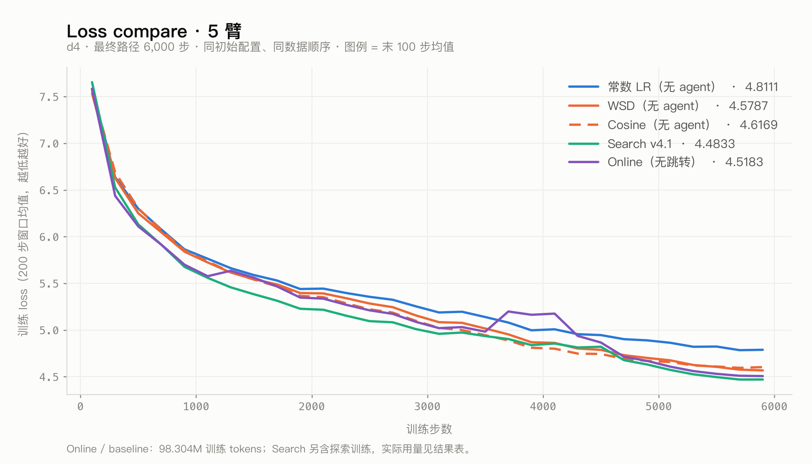
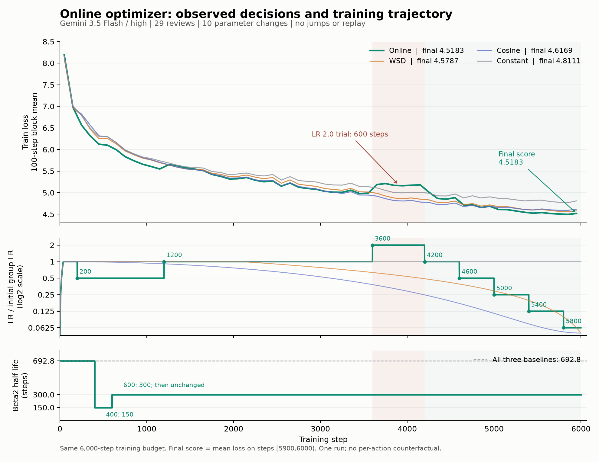

Agentic Optimizer · view board
54.7M 参数 · 同一初始配置与数据顺序 · 最终路径均为 6,000 步 · 分数为末 100 步 train loss，越低越好。

单独查看 Online / WSD / Cosine 三组对比图 · 深色版


| run | 方法 | 末 100 步 loss | 实际训练 tokens | reviews | |
|---|---|---|---|---|---|
| v41_agentic_poor_d4_20260831-1742 | Search | 4.4833 | 376.898M | 116 | 打开 → |
| online_poor_d4_20261022-0434 | Online | 4.5183 | 98.304M | 29 | 打开 → |
| v27_wsd_poor_d4_20260826-2154 | WSD | 4.5787 | 98.304M | 0 | 打开 → |
| v27_cosine_poor_d4_20260827-0010 | Cosine | 4.6169 | 98.304M | 0 | 打开 → |
| v27_const_poor_d4_20260827-0216 | Constant LR | 4.8111 | 98.304M | 0 | 打开 → |
Online 与 baseline 各训练 98.304M tokens；Search 的训练量包含额外探索。LLM 调用和等待时间另有成本。这里展示的是单次运行结果，没有 held-out 评估。
Online · 操作轨迹与复盘
29 次 review，10 次改参，19 次保持。逐次查看实际动作与模型记录 →

- Ten parameter changes and nineteen holds across twenty-nine reviews; beta1 never changed.
- Early control adjusts beta2 half-life 692.8 -> 150 -> 300 and LR 1 -> 0.5 -> 1.
- At 3600 the agent read its earlier LR-doubling review before doubling LR again to 2; it held that rate until 4200.
- R0019 labels the previous expectation supported despite missing the explicit loss target of below 4.95.
- The final four LR halvings exactly execute the plan recorded at step 4200.
- The frozen prompt explicitly suggests closing staircase annealing; its timing and spacing are left to the agent.
- Baseline betas remain fixed while the agent also tunes beta2, so this comparison does not isolate adaptive LR scheduling.
- One trajectory cannot establish the causal benefit of any individual intervention or superiority over a well-tuned fixed schedule.